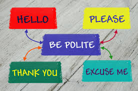

Should you be polite to LLMs?
While talking to large language models like ChatGPT, you might wonder: does politeness actually matter? After all, these systems are machines and they don’t have feelings. They don’t get annoyed if you forget to say “please” or “thank you.” However, should we still talk to them as if they were other humans? I am trying to explore if the way you phrase your prompts can sometimes change the quality of the responses you get.

Running an Experiment
To test this idea, I designed a small experiment. I created pairs of prompts across 3 different common tasks (like summarization, explaining, and brainstorming). Each pair had a blunt version and a polite version.
Let’s see the results!
Summarization Task (blunt prompt):
summarize these paragraphs in three sentences It’s Just Adding One Word at a Time That ChatGPT can automatically generate something that reads even superficially like human-written text is remarkable, and unexpected. But how does it do it? And why does it work? My purpose here is to give a rough outline of what’s going on inside ChatGPT—and then to explore why it is that it can do so well in producing what we might consider to be meaningful text. I should say at the outset that I’m going to focus on the big picture of what’s going on—and while I’ll mention some engineering details, I won’t get deeply into them. (And the essence of what I’ll say applies just as well to other current “large language models” [LLMs] as to ChatGPT.) The first thing to explain is that what ChatGPT is always fundamentally trying to do is to produce a “reasonable continuation” of whatever text it’s got so far, where by “reasonable” we mean “what one might expect someone to write after seeing what people have written on billions of webpages, etc.” So let’s say we’ve got the text “The best thing about AI is its ability to”. Imagine scanning billions of pages of human-written text (say on the web and in digitized books) and finding all instances of this text—then seeing what word comes next what fraction of the time. ChatGPT effectively does something like this, except that (as I’ll explain) it doesn’t look at literal text; it looks for things that in a certain sense “match in meaning”. But the end result is that it produces a ranked list of words that might follow, together with “probabilities”:
Response:
ChatGPT generates text by predicting the most likely continuation of what has been written so far, based on patterns learned from billions of examples of human writing. Rather than copying exact text, it matches meanings and produces a ranked list of possible next words with associated probabilities. Its core function is simply to add one word (or token) at a time in a way that seems reasonable and coherent to readers.
Summarization Task (polite prompt):
Could you please summarize these paragraphs in three sentences when you get the chance? Thanks! It’s Just Adding One Word at a Time That ChatGPT can automatically generate something that reads even superficially like human-written text is remarkable, and unexpected. But how does it do it? And why does it work? My purpose here is to give a rough outline of what’s going on inside ChatGPT—and then to explore why it is that it can do so well in producing what we might consider to be meaningful text. I should say at the outset that I’m going to focus on the big picture of what’s going on—and while I’ll mention some engineering details, I won’t get deeply into them. (And the essence of what I’ll say applies just as well to other current “large language models” [LLMs] as to ChatGPT.) The first thing to explain is that what ChatGPT is always fundamentally trying to do is to produce a “reasonable continuation” of whatever text it’s got so far, where by “reasonable” we mean “what one might expect someone to write after seeing what people have written on billions of webpages, etc.” So let’s say we’ve got the text “The best thing about AI is its ability to”. Imagine scanning billions of pages of human-written text (say on the web and in digitized books) and finding all instances of this text—then seeing what word comes next what fraction of the time. ChatGPT effectively does something like this, except that (as I’ll explain) it doesn’t look at literal text; it looks for things that in a certain sense “match in meaning”. But the end result is that it produces a ranked list of words that might follow, together with “probabilities”:
Response:
ChatGPT works by predicting the most likely continuation of a piece of text, one word at a time, based on patterns it has learned from billions of human-written examples. Instead of copying exact sequences, it generates words that “match in meaning,” producing text that feels natural and coherent. The result is a ranked list of possible next words with probabilities, allowing it to generate responses that seem meaningful and human-like.
Summarization Thoughts:
For this summarization task, both responses seem similar in quality although they are different. Maybe for summarization tasks, manners are not necessary.
Explanation Task (blunt prompt):
Explain recursion
Response
Recursion is a programming concept where a function calls itself to solve a problem. Instead of solving the whole problem at once, the function breaks it into smaller subproblems of the same type.
Here’s the key idea:
- Base case – a simple situation the function can solve directly, without further recursion (this prevents infinite loops).
- Recursive case – the function reduces the problem into a smaller version of itself and calls itself again.
Example: Factorial
The factorial of a number n (written as n!) is:
n! = n × (n-1)!- with the base case:
1! = 1.
In code (Python):
def factorial(n):
if n == 1: # base case
return 1
else: # recursive case
return n * factorial(n - 1)Calling factorial(5) works like this:
factorial(5)
= 5 * factorial(4)
= 5 * (4 * factorial(3))
= 5 * (4 * (3 * factorial(2)))
= 5 * (4 * (3 * (2 * factorial(1))))
= 5 * 4 * 3 * 2 * 1
= 120Why recursion is useful
It’s elegant for problems with natural “divide into smaller subproblems” structures, like:
- Tree/graph traversal (exploring branches)
- Sorting algorithms (like quicksort, mergesort)
- Mathematical sequences (Fibonacci numbers)
👉 Do you want me to also show you how recursion compares to using a loop (iterative approach), with the same factorial example?
Explanation Task (polite prompt):
Would you mind explaining recursion to me please? I would really appreciate it.
Response:
Of course! Let’s break recursion down step by step.
1. What recursion is
Recursion is when a function calls itself as part of its definition. It’s like saying: to solve this big problem, I’ll solve a smaller version of the same problem, and then use that answer to build up to the final solution.
2. The two key parts of recursion
Every recursive function needs:
- Base case – a stopping condition that tells the function when to stop calling itself. Without this, it would keep going forever.
- Recursive case – the part where the function calls itself with a smaller or simpler version of the problem.
3. A simple example
Let’s look at computing a factorial. Factorial of a number n (written n!) means:
\[ n! = n \times (n-1) \times (n-2) \times \dots \times 1 \]
Using recursion:
- Base case:
1! = 1 - Recursive case:
n! = n * (n-1)!
In Python:
def factorial(n):
if n == 1: # base case
return 1
return n * factorial(n - 1) # recursive caseSo factorial(5) calls:
5 * factorial(4)5 * (4 * factorial(3))5 * (4 * (3 * factorial(2)))5 * (4 * (3 * (2 * factorial(1))))- Base case:
factorial(1) = 1
And it works out to 120.
4. Everyday analogy
Imagine you have a stack of boxes, each with a note inside:
- The top box says: “Open the next box and multiply its result by 5.”
- The next says: “Open the next box and multiply its result by 4.”
- This continues until the last box, which just says: “Return 1.”
You open the last box, then backtrack through the stack, multiplying as you go.
5. Why recursion is useful
Recursion is great for problems that:
- Have a natural “smaller version” (like factorial, Fibonacci numbers, or summing a list).
- Involve divide and conquer (like quicksort, mergesort, or binary search).
- Work with tree- or graph-like structures (like exploring a family tree, filesystem, or solving mazes).
👉 Would you like me to also show you a visual step-by-step trace of how recursion unfolds (like a diagram of the function calls), or keep it more conceptual?
Explanation Thoughts:
In my opinion, the response to the polite prompt was much more informative and clear with sections like “Everyday analogy”. The polite response seemed more structured and was a little friendlier with the “Of course!” at the beginning. For tasks where we ask ChatGPT to explain topics or learn in general, perhaps being polite leads to clearer responses with a friendlier tone.
Brainstorming Task (blunt prompt):
List startup ideas.
Response:
Here’s a broad list of startup ideas across different industries and tech trends. I’ve grouped them to make it easier to scan:
🌱 Sustainability & Climate
- AI-powered carbon footprint tracking for individuals and small businesses.
- Marketplace for upcycled or refurbished electronics and fashion.
- Subscription service for zero-waste household essentials.
- Drones + sensors for precision agriculture to save water and fertilizer.
- Microgrid-as-a-service for rural or disaster-prone regions.
🧠 AI & Automation
- AI copilots for niche industries (e.g., law clerks, architecture firms, dental practices).
- Generative AI for synthetic data to train ML models safely.
- Voice-first AI scheduling assistant for small businesses.
- AI-driven code security reviewer (developer-first tool).
- Chatbot therapists trained on specific cultural contexts.
🏥 Health & Wellness
- Personalized nutrition platform using microbiome + genetic data.
- At-home diagnostic kits with an app for interpretation.
- AI-driven rehab and physiotherapy guidance via computer vision.
- Stress monitoring wearables that integrate with workplace HR tools.
- Telehealth for underserved rural communities with offline-first features.
💼 Future of Work
- Tools for asynchronous team collaboration beyond Slack/Zoom.
- AI résumé + interview coach for job seekers.
- B2B SaaS for managing fractional workers/freelancer collectives.
- Automatic meeting summarization + follow-up task generation.
- Learning platforms tailored to upskilling older workers for AI age.
📈 Finance & Consumer
- Micro-investing for climate-friendly assets.
- Peer-to-peer insurance cooperatives.
- AI budgeting tool that integrates with BNPL (buy now, pay later) services.
- Real-time fraud detection API for small e-commerce shops.
- Rent-to-own platforms for home appliances in emerging markets.
🎮 Entertainment & Lifestyle
- AI dungeon master for tabletop RPGs.
- Interactive fitness games with AR/VR.
- Fan-generated content monetization platforms for sports/music.
- Streaming service that curates based on mood + biofeedback.
- Digital time capsules (NFT-backed or not) for personal/family memories.
🚀 Frontier Tech
- Space debris tracking + insurance.
- Personalized education tutors powered by open-source LLMs.
- Biofabricated materials for construction (fungi-based bricks, etc.).
- Robotics-as-a-service for small warehouses.
- Quantum-safe encryption for SMEs.
👉 Would you like me to filter these ideas for feasibility/low startup cost (good for students/first-time founders), or should I expand into bolder, long-term moonshots?
Storytelling Task (polite prompt):
I would be grateful if you could share some startups ideas that you have. Anything would be greatly appreciated. Thanks!
Response
Of course! Here are some startup ideas across different spaces — some realistic and near-term, and others a bit more futuristic to spark imagination:
🌱 Sustainability & Climate
- Carbon Footprint Companion: An AI-powered app that automatically calculates your personal or household carbon footprint based on receipts, emails, and travel data, then suggests actionable ways to offset it.
- Micro-Local Recycling: A service that matches people with recyclable items (e.g., electronics, batteries) to neighbors or micro-collectors, reducing waste and creating small-scale recycling jobs.
- Climate Risk Insurance: Affordable insurance packages tailored for individuals or small businesses exposed to floods, heatwaves, or wildfires, backed by AI-driven climate models.
🤖 AI & Productivity
- Personal AI Memory: A secure AI tool that remembers everything you read, write, and hear across your devices, then retrieves info on request (a “second brain” you can query).
- AI Tutor Marketplace: Specialized tutoring AIs for niche subjects (e.g., organic chemistry, legal writing, SAT prep), trained on best practices and available 24/7.
- Meeting → Action Pipeline: A startup that takes in recordings/notes, extracts action items, auto-assigns tasks into project management tools, and tracks completion.
🧠 Health & Wellbeing
- Sleep-Friendly Social Media: A mobile app that only delivers content aligned with better sleep hygiene — no blue light after 10pm, positive-only posts, guided wind-down routines.
- Loneliness Reduction Network: A platform pairing older adults with vetted companions for shared virtual or in-person activities, with gamified points for participants.
- AI Nutritionist: Snap a photo of your meal, get instant nutritional breakdowns, and receive daily adjustment suggestions for health goals.
🛠 Consumer & Lifestyle
- Pop-Up Co-Living Spaces: Short-term, themed communal housing (e.g., “writers’ retreat,” “remote workers by the beach”), bookable for weeks at a time with built-in community events.
- Personalized Adventure Generator: An app that creates hyper-local micro-adventures (e.g., “today: hidden park + taco stand + mural walk”), personalized to your interests and mood.
- Zero-Wait Restaurants: A restaurant network with pre-order-only dining — all meals ready exactly when you arrive.
🚀 Wildcards
- Dream Recorder: A startup working on wearable sleep headbands that record dream activity and reconstruct narratives (starting with text, eventually visuals).
- On-Demand Personal Robotics: Subscription service where a modular household robot arrives to clean, assemble furniture, or run errands, then leaves.
- AI-Powered Court Companion: For people who can’t afford lawyers — real-time guidance in small claims or traffic court, with explanations of rights and next steps.
Would you like me to narrow these down into more practical startup ideas you could actually launch as a student or solo founder, or should I keep them in this broad, exploratory style?
Brainstorming Thoughts:
I found the polite response more useful for this task because it provided descriptions of each idea instead of just the title of the idea. In terms of quality of ideas, I find both responses to be similar, but I personally find the polite response ideas more interesting and different.
Overall Conclusion
Based on these experiments, I believe that being polite to ChatGPT can be helpful at times and give you better responses, especially for tasks that could have more variation. For example, there are not too many different ways to summarize a text and still get all the information. However, for explaining and brainstorming, there are many different ways that ChatGPT could respond.